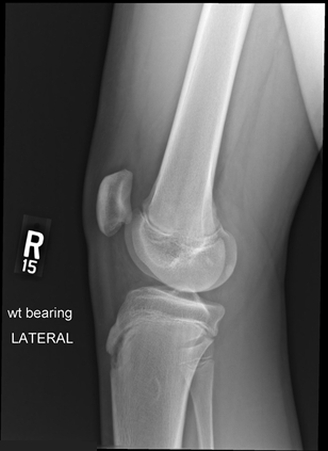

Normal Knee Radiograph

Notice the smooth cortical surfaces. Why is the bone more dense there than it is in the medulla? Notice the joint space. Why is there a gap there? What is the gap 3 cm above and 2 cm below the joint space?